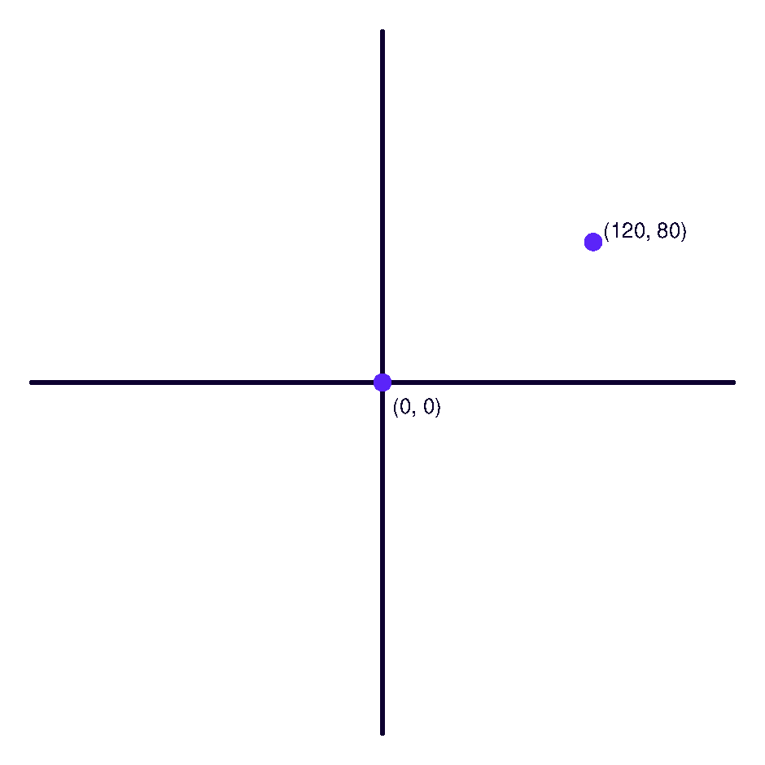

Глава 6 · Рисуем классные вещи с помощью Turtle
Координаты: центр (0, 0)
Числа из главы 5 становятся местом на экране — знакомимся с координатной системой окна Turtle.
Мы уже встречали координаты в главе 5 — точки на плоскости с координатами x и y. Окно Turtle устроено ровно по той же системе, и она будет буквально управлять тем, что рисует черепашка.
Центр экрана — точка (0, 0)
В отличие от многих других графических систем (где ось Y растёт вниз), Turtle использует привычную математическую систему координат:
- x — горизонталь: положительные значения вправо, отрицательные влево.
- y — вертикаль: положительные значения вверх, отрицательные вниз.
- Центр окна — точка
(0, 0), где черепашка появляется по умолчанию.
| Координата | Куда указывает |
|---|---|
(100, 0) | вправо от центра |
(-100, 0) | влево от центра |
(0, 100) | вверх от центра |
(0, -100) | вниз от центра |
Координаты на самом деле управляют окном
Это не просто абстрактная схема — координатная система по-настоящему определяет, куда черепашка попадёт, если её туда отправить:
koordinaty.py
import turtle
screen = turtle.Screen()
screen.setup(width=480, height=480)
artist = turtle.Turtle()
artist.hideturtle()
artist.speed(0)
# ось X
artist.penup(); artist.goto(-200, 0); artist.pendown()
artist.pencolor("#0D0230"); artist.pensize(2)
artist.goto(200, 0)
# ось Y
artist.penup(); artist.goto(0, -200); artist.pendown()
artist.goto(0, 200)
# отметим начало координат и одну точку
artist.penup(); artist.goto(0, 0)
artist.dot(10, "#5B24F9")
artist.goto(120, 80)
artist.dot(10, "#5B24F9")
artist.write(" (120, 80)", font=("Arial", 12, "normal"))
artist.goto(0, -20)
artist.write(" (0, 0)", font=("Arial", 12, "normal"))
screen.exitonclick()Результат выполнения

write() — подписать точку на экране
В примере выше использована команда
artist.write("текст") — она печатает текст в текущей позиции черепашки. Удобно для подписи точек на схемах, как здесь.Практика: координаты и goto()
Модуль turtle открывает нативное окно Python — выполните локально в VS Code, PyCharm или Jupyter